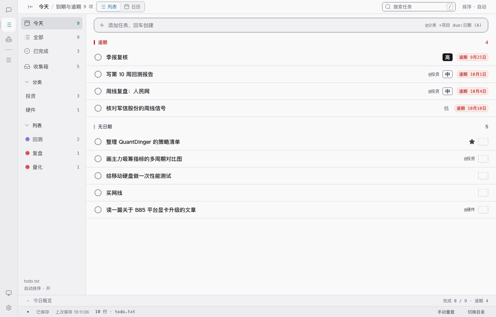
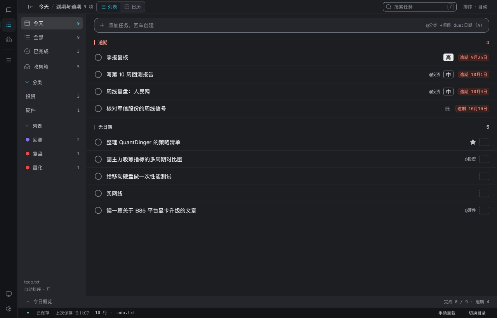

优先级四档 · 字阶徽章
把「无 / 低 / 中 / 高」从只靠字重 400·500·600 的微弱差别，补成一眼能数出急缓的四档形状梯度：虚线空框 → 浅字 → 细描边 → 实心底反白。全程中性墨，不给优先级任何语义色。
- 方向
- 字阶徽章（用户裁决 B）
- 覆盖
- 全产品贯通 · 7 处渲染点
- 用例
- 39 文件 / 726 条
- 对比度
- 110 组 · 全过
- 状态
- 工作树内 · 未提交
为什么改
11-07 定下「界面读高 / 中 / 低，字重三档，中性可读色」之后，四档实际只剩字重一个维度：13px 的中文单字在 400 与 600 之间的差别太轻，扫列表时读不出急缓；「无」又是一个不画任何东西的空槽。用户这轮的原话是「希望有区分急缓层次的效果」。
给了四个方向做对比（刻度徽记 / 字阶徽章 / 暖色强度 / 行首强度条），裁决为 字阶徽章、范围 全产品贯通。暖色强度被否掉的理由很直接：它最直观，但要放开「颜色只编码状态」，而「逾期」是本产品整行唯一的强色，多一套红会把这个语义稀释掉。
四档梯度
| 档位 | 文件原文 | 界面读数 | 形状 | 字重 | 前景 / 底 | 语义 |
|---|---|---|---|---|---|---|
| 无 | 不写括号字母 | 空（不画「中」） | 1px 虚线空框 | — | --prio-empty-line / 透明 | 「没填」这个记号，不是第四种等级的值 |
| 低 | (C) | 低 | 无框无底 | 400 | --muted / 透明 | 最轻，但保持 13px、不压到看不见 |
| 中 | (B) | 中 | 1px 实线细描边 | 500 | --text / --control-line | 描边沿用 WCAG 1.4.11 的 3:1 契约线 |
| 高 | (A) | 高 | 实心底反白 | 600 | --prio-strong-fg / --prio-strong-bg | 四档里唯一的实心块，扫一眼压住整行 |
| 其它 | (D)…(Z) | 原字母 | 虚线框 + 浅字 | 400 | --muted / --prio-empty-line | 解析器允许任意大写字母，界面不假装它不存在 |
明暗两套令牌：浅色下「高」是深墨底白字，暗色下反过来提亮成浅底深字 —— 语义都是「最重的一档」。新增 3 个语义令牌（--prio-strong-bg / --prio-strong-fg / --prio-empty-line），都写在 CSS §1 令牌层，令牌层外没有裸色值。
单一真相源，七处渲染点
过去各组件各拼一套类名：任务行用 priorityClass()，对话快照自己拼 'p-' + letter，日历 chip 借同一函数却把「无」落成 p-other，样式指南的手写快照甚至把「无」画成「中」。档位一多，散拼必然漂移。
lib/priority.js priorityTone / priorityClass / priorityLabel / priorityTitle
+ PRIORITY_STEPS（无 → 低 → 中 → 高 的梯度顺序）
components/PriorityMark.jsx badge 形态（带中文） / mark 形态（纯形状，读屏跳过）
统一产出 prio-none | prio-low | prio-mid | prio-high | prio-other
| 位置 | 形态 | 说明 |
|---|---|---|
任务行 TaskRow | badge | 四档徽章 + 悬停里的 todo.txt 写作 (A) |
对话快照 ChatPanel | badge · 收窄 | 252px 窄列只收尺寸（22×18），形状不缩水 |
| 日历 chip / 无日期托盘 | mark | 8px 记号，与项目色点同排；不带中文（chip 里已有标题） |
| 快速添加写入行 chip | mark | 仍抄原文「高 (A)」，前面加档位记号 + 字重 |
| 编辑抽屉 / 提议弹窗 | mark | 四个按钮各带档位形状，选之前就能横向比较 |
| 任务行右键菜单 | mark | 对勾表「当前选中」，记号表「这一档有多急」，两者不混 |
样式指南 chatflow | badge · 收窄 | 手写假快照改用真实组件，修掉「无画成中」 |
窄屏（<480）把日历 chip 压成 8px 色块，形状装不下，降级为同一条中性明度梯度：--prio-empty-line 空圈 → --muted → --control-line → --text，四档齐全。状态色（今天 / 逾期 / 已完成）仍排在后面压过档位。
顺手修掉的旧账
- 日历只有三档：
.cal-chip.p-A/.cal-chip.p-C有规则，p-B与「无」都落回默认态；托盘同样只认两档。现在四档共用.prio-mark。 - 样式指南把「无」画成「中」：
styleguide.jsx的chatflow手写快照写死{t.priority || '中'}，且只输出字母、不带档位类。这正是 11-07 明令禁止的回退。 - 窄屏三档色块：
.cal-chip.p-A/.cal-chip.p-C之外全是默认灰，B 和「无」并成一档。 - CSS 注释自相矛盾：文件头写「视觉重量编码优先级」，优先级段却写「字重 + 明度三档」、下一段又改成「只靠字重」。现在统一成四档字阶徽章的口径。
- D~Z 无定义类：对话快照会拼出不存在的
p-D。现在由prio-other兜底。
没有动的东西
- 颜色只编码状态：四档全部中性墨。逾期仍是整行唯一强色，accent 只表选中 / 今天到期 / 焦点。
qa-settings.mjs新增一条浏览器断言，实测高档实心底的 RGB 三通道差 ≤24，防止以后有人把「高」改回红色。 - 界面读数仍是中文「高 / 中 / 低」；
(A)/(B)/(C)只在 title、写入行 chip、编辑抽屉选择器、右键菜单里供核对。 - 「无」是空的：虚线框是「没填」的记号，不带任何字、
aria-hidden="true"。固定 26×20px 让右侧日期列成一条直线。 - 外观偏好不进 todo.txt：这次只改渲染与本机样式，数据格式零改动。
- 菜单顺序不变：仍是「无 / 高 / 中 / 低」，只给每项加了记号，不重排用户肌肉记忆。
门禁结果
| 门禁 | 结果 | 本轮新增 |
|---|---|---|
npm test | 39 文件 / 726 用例 | priority.test.js 8 条、PriorityMark.test.jsx 6 条，TaskRow / CalendarView / QuickAdd 补 5 条 |
test:ui | 110 组对比度 · Hook 42 文件 | +6 组：反白字 / 实心底 / 中档描边落 chip 底；+3 条虚线空框 REFERENCE |
test:guard | 39 / 39 | 两份新测试文件确实跑到 |
test:nl | 44 / 44 · 174 词表 | — |
test:settings | 29 / 29 | +7 条：四档同屏、中文读数、computed 形状、字重递进、中性墨、日历四档记号 |
test:tools | 74 / 74 | — |
test:responsive | 38 档 / 539 项 | — |
npm run build | 333.70 kB JS | — |
qa-css-check.mjs 的 RUNTIME_VALUES 由 p-A/p-B/p-C/p-other + priority-none/snapshot-prio-none 换成五个 prio-* 值 —— 旧白名单之所以没拦住漂移，是因为它把「无」当成 p-other 放行了。
// 注释 写在 JSX 子元素位置，React 会当成文本节点渲染进任务行。页面不报错，单测全绿，但行里凭空多两行中文、把布局撑到触屏命中区失效 —— test:responsive 报了 6 项「复选框被遮挡」。改成 {/* */} 后恢复，并在 TaskRow.test.jsx 加了一条「元信息簇里没有裸文本」的断言。这是「组件级改动必须补渲染测试」这条规矩的又一次兑现。真实界面截图
由 npm run test:settings:shots 生成，已抹掉样式指南外壳，是产品界面的原样。




取舍与剩余空白
- 「高」的实心块确实抢眼：这是 B 方案已知的代价，用户接受。它用中性墨而不是红色，所以不会和逾期红抢语义。
- 紧凑形态不带中文：日历 chip 只有 11px、还要放项目色点和标题，塞中文会糊。形状语言与完整徽章共用同一组档位类，不另立一套。
- 写入行仍是原文：快速添加 chip 保持
高 (A)，只在前面加记号 —— 那是展示 todo.txt 真实内容的地方，不做界面释义替换。 - 右键菜单 / 抽屉选择器的点击链路仍未自动化：项目没有 jsdom / testing-library，菜单展开、点击改优先级这类 DOM 事件链路仍靠手工演示。渲染层与档位映射已有断言。
- 浏览器门禁仍不入 CI：runner 需预装 Edge / Chrome，与 11-10 日历交付同一条结论。
- 未提交、未发版：连同 11-07 UI 重做、11-08 日历、11-10 日历补齐与本次改动，全部仍在工作树里；CHANGELOG 最新仍是 v1.3.0。